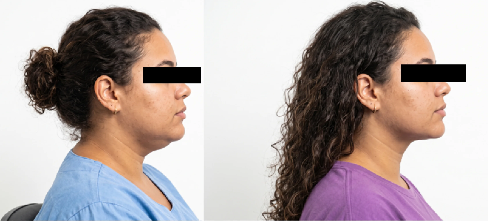

Perfil — caso real
O caso ilustra uma evolução individual de contorno. A indicação e o planejamento dependem do conjunto entre gordura, pele, músculo e estrutura facial.
Volume abaixo do queixoTransição com o pescoçoRelação com a mandíbula